-4ex -1ex -.4ex 1ex .2ex Running time
Definition 1.1. If there is a constant C and a number k such that $$\forall n \ge k,\phantom{a} f(n) \leq C\cdot g(n)$$ We say that a function f is of order of a function g and write: f(n) = O(g(n))
It is common to say this problem can be solved in O(f(n)).
-4ex -1ex -.4ex 1ex .2ex
Euler path Example of
decision problem: Is it possible to draw this figure without going over
the same line?
What if you get the following cases?
Is it possible to have a walk around the city, crossing each of the
seven bridges only once ?
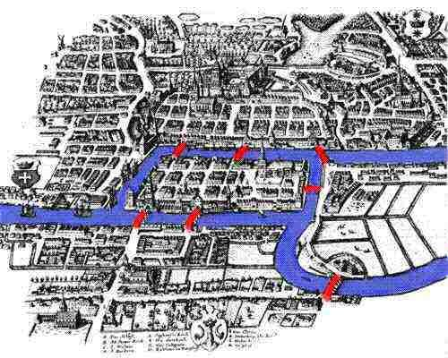
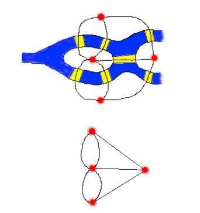
Definition 1.2. Eulerian path: a path in a finite graph that visits every edge exactly once.
By transforming our problem into a graph, our question amounts to asking whether there is an Eulerian path.
Theorem 1.1.
A connected graph has an Eulerian path ⇔ the number of nodes with odd degree is 0 or 2.
May the number be 0 then the path is a cycle: it starts and finishes on the same node.
The theorem gives a certificate for the existence of an Eulerian path
but doesn’t provide a effective solution.
We can also conclude that the people of the city will not be able to
cross the city without going over one of the bridges.
We can add-delete bridges to make it Eulerian.This idea leads to the
chinese postman problem: What is the minimum number of edges we need to
add to make the graph Eulerian? (Efficient algorithm by Jack Edmonds).
-4ex -1ex -.4ex 1ex .2ex
Dijkstra’s algorithm What is
the shortest path from A to C ?
Start by setting the distance from A to A to zero in the node.
The color yellow indicates the final answer.
For the node that was just made yellow, check what you can reach by
using its outgoing arcs.
Finalize the smallest number that is not yellow yet
Check everything you can reach by using 1 arc from the node that was
last made yellow.
Update numbers if you found a shorter path.
Finalize the smallest number that is not yet yellow.
Ignore arcs that point back to something that was already
finalized
Finalize the smallest number that is not yet yellow
Ignore arcs that point back to something that was already
finalized
Finalize the smallest number that is not yet yellow
When the destination node is yellow, we are done.
Note: in this case the destination was the last node to become yellow,
but this is not always the case.
Does Dijkstra’s algorithm give the optimal solution in any graph? -4ex -1ex -.4ex 1ex .2ex Greedy algorithms A greedy algorithm extends its wealth (the solution being constructed) by taking the step with highest immediate gain.Greedy algorithms are often sub-optimal but they can be optimal.We will see that through Minimal Spanning Tree problem.
Problem: laying cables
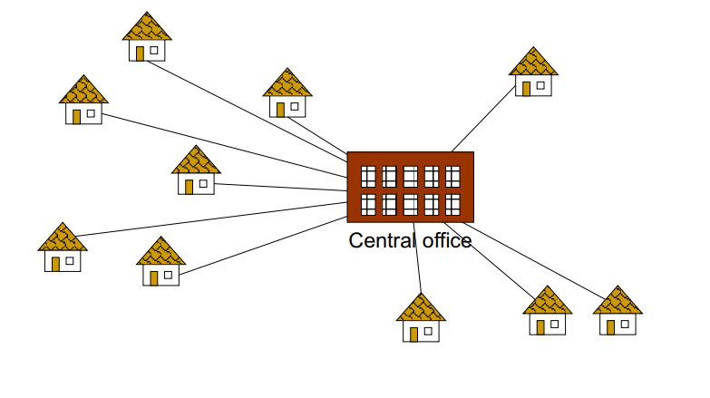
Definition 1.3.
A tree is a connected graph without cycles.
A spanning tree of a graph is a tree that contains all
the vertices of the graph and a subset of its edges.
A graph may have many spanning trees:
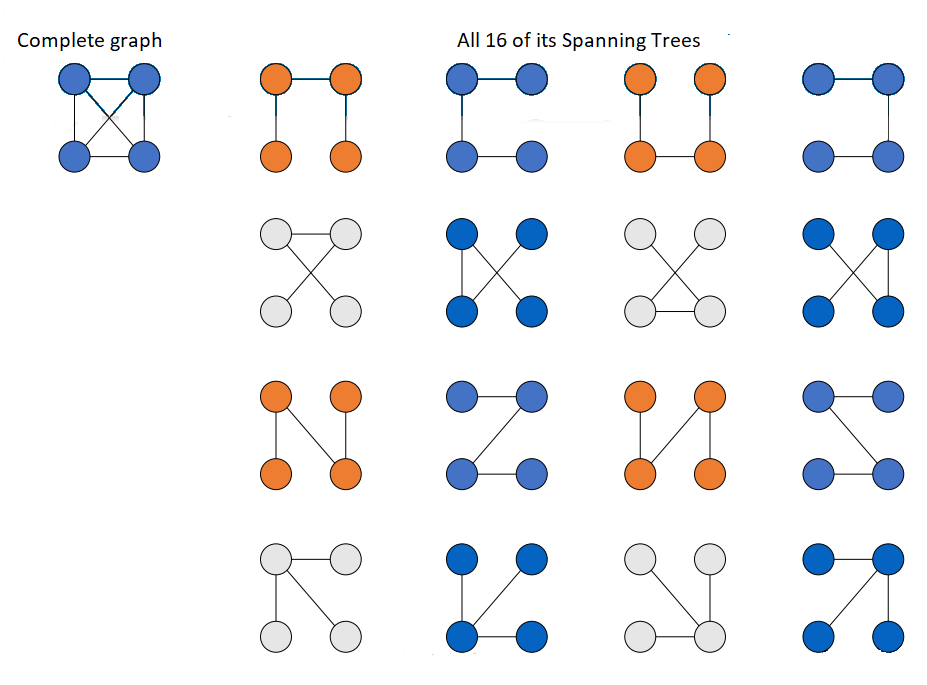
Definition 1.4. The Minimum Spanning Tree for a given graph is the Spanning Tree of minimum cost for that graph.
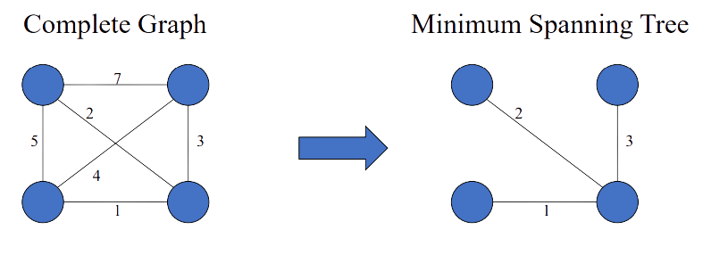
We can imagine several versions of such a greedy algorithms and they
may have different efficiencies. -4ex -1ex -.4ex 1ex
.2ex Kruskal’s
Algorithm This algorithm creates a forest of trees. Initially the
forest consists of n single node trees (and no edges). At each step, we
add one edge (the cheapest one) so that it joins two trees together. If
it were to form a cycle, skip that edge (it would not be needed).
The steps are:
The forest is constructed with each node in a separate tree.
The edges are placed in a priority queue.
Until we’ve added n − 1 edges,
Extract the cheapest edge from the queue
If it forms a cycle, reject it
Else add it to the forest. Adding it to the forest will join two trees together.
Every step will have joined two trees in the forest together, so that
at the end, there will only be one tree.
The edges are placed in a priority queue: sorting them makes the
algorithm easier to visualize.
We can stop since we have n-1 edges. -4ex -1ex -.4ex 1ex .2ex Prim’s Algorithm The steps are:
Initialize new graph with one (arbitrary) node from the old graph.
While new graph has fewer than n nodes:
Find the node from the old graph with the smallest connecting edge to the new graph
Add it to the new graph
Every step will have joined one node, so that at the end we will have
one graph with all n nodes and it will be a minimum spanning tree of the
original graph.
-4ex -1ex -.4ex 1ex .2ex Max flow Given a network directed from a source vertex to a target vertex with a maximum capacity on each arc, determine the highest value of a flow from the source to the target which respects the capacities and is preserved at each intermediate vertex.
-4ex -1ex -.4ex 1ex .2ex Method of Ford & Fulkerson
Start with a flow of zero.
At each iteration consider the residual graph composed of
the original arcs with capacity = original capacity - the flow on
the arc.
This is called the residual capacity.
⇝if this value is zero, the arc is
eliminated.
Arcs opposite to the original ones with capacity equal to the
flow passing on the corresponding arc
⇝if this value is zero, the arc is
eliminated.
Try to find a path from source to target on the residual graph and
update the flow with the minimum capacity along the path (increase flow
for original arcs, decrease for opposite arcs).
Update the residual graph.
construct the re a path not exist, we’re done: the flow is
maximal.
Start with a flow of zero.
Construct the residual graph as follow:
-Keep the same edges
-Capacity of edges is actual capacity - flow
-Backward arrow if we have flow
Select a path from s to t.
Therefore the residual capacity is 8.
Add the residual capacity to the flow.
Construct the residual graph and select a path.Therefore the residual capacity is 2.
Add the residual capacity to the flow.
Construct the residual graph and select a path.
Therefore the residual capacity is 6.
Add the residual capacity to the flow.
Construct the residual graph and select a path. Therefore the residual capacity is 2.
Add the residual capacity to the flow.
Therefore the residual capacity is 1.
The max flow is 1 + 2 + 6 + 2 + 8 = 19.
Decide or not if there is no more path available it’s not a good
condition for a computer.We need to introduce an another condition.
Definition 1.5. A cut corresponds to a set of edges
(arcs) whose removal leaves a graph disconnected.
Sometimes a cut is denoted by a partitioning of the nodes:
Example above: s,3 and 2,4,5,t.
An s-t cut is a
division of the nodes into two parts, with the source in one part and
the target in the other.
The value of a cut is
defined as the combined capacity of the outgoing arcs.
For instance, the green cut has a value/capacity of 10+9.
The minimum cutis
among all cuts the one with the smallest value.
Theorem 1.2.
Min cut = Max flow and FF algorithm finds them.
Proof. Clearly Min cut ≥Max
flow since any flow that we push from s to t has to go through the green
area.
Claim: when FF algorithm terminates, it gives a cut C and a flow F for
which value(C) = value(F).
It follows min cut ≤ value(C) = value(F) ≤
max flow. ◻
Definition 1.6. By Edmonds-Karp-Dinitz, Apply the FF algorithm but always choose the path with the minimum number of edges allows to terminate in O(mn).
-4ex -1ex -.4ex 1ex .2ex
Min cost flow Given the
network with costs and capacities and a flow value v, we need to find an
s − t flow of value
v of minimum cost.
Algorithm:
Find a feasible flow of value v (for example by FF). Construct residual graph (negative of the cost for reverse arcs)
While there is a negative-cost cycle in residual graph:
Add flow over the cycle.
Update the residual graph.
Definition 1.7. A flow is a minimum cost flow (of given value v) ⇔ Residual graph has no negative-cost cycles.
Example: Find a min cost flow of value 2.
-4ex -1ex -.4ex 1ex .2ex Tutorial 1: Basics of Graph Theory
Definition 2.1.
A graph G is defined by a pair (V,E) where:
V is a finite set of points
E is a set of pairs of two distinct points.
A graph is drawn by depicting the points in V as dots and the pairs in E as lines between two points.
The points defining a graph are called vertices and the lines are called
edges.
⇝ The number of vertices is denoted by
|V| = n and the
number of edges by |E| = m.
A graph is called simple if there is at most one edge between every pair of points.
If for two vertices u, v ∈ V we have
the edge e = {u, v} ∈ E
then we say that u and v are adjacent or u and v are incident to
e / e is incident to u and v.
Two edges that share a vertex are also said to be
adjacent.
The number of edges incident to vertex v ∈ V is called the degree of v and denoted by d(v).
A graph is called regular if all vertices have the same degree.
A graph is called k-regular if all vertices have degree k.
Exercise 2.1 (1.7$\phantom{a}$). How many 2-regular graphs exist with 5 vertices?
Exercise 2.2 (1.8$\phantom{1}$). How many 3-regular graphs exist with 5 vertices?
Exercise 2.3 (1.11). How many edges has a 5-regular graph on 16 vertices?
Exercise 2.4 (1.12). How many edges has a k-regular graph on n vertices?
Exercise 2.5 (1.16). Prove that every graph has an even number of points with odd degree.
Exercise 2.6 (1.19). Prove that a graph G = (V,E) with |V| = n and |E| = m has a vertex with degree $\leq \frac{2m}{n}$ and a vertex with degree $\geq \frac{2m}{n}$ .
Exercise 2.7 (1.21). Prove that every graph G = (V,E) with |V| ≥ 2 has two vertices of the same degree.
Definition 2.2.
A graph G = (V,E) is
complete if each pair
of points is adjacent. A complete graph on n points is denoted by Kn.
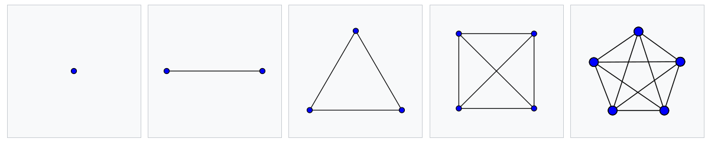
A graph G is bipartite if V can be split into two sets V1 and V2 such that for each edge e = {u, v} ∈ E, we have |e ∩ V1| = |e ∩ V2| = 1.
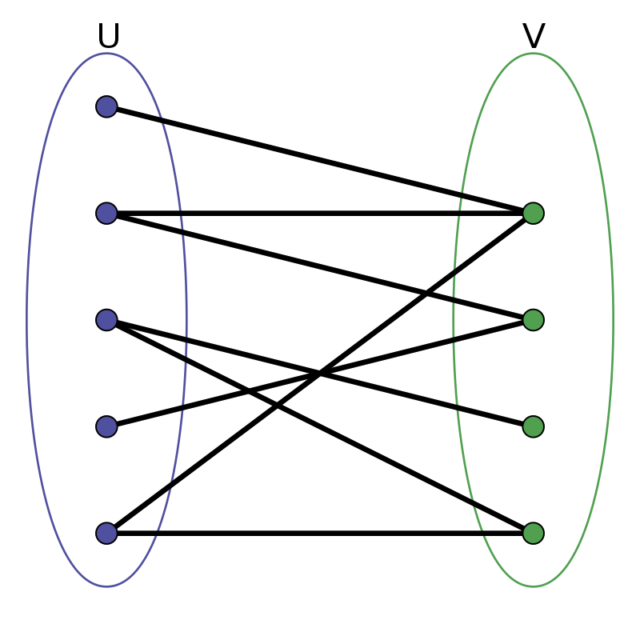
Informally, bipartite means that there are only arrows going across V1 and V2.
A complete bipartite graph with V = V1 ∪ V2 has edge set $$E = \{\phantom{a}\{v_1, v_2\}\phantom{a}|\phantom{a} v_1 \in V_1, v_2 \in V_2\}$$
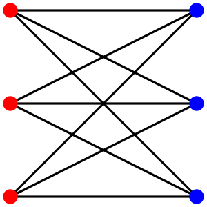
The complete bipartite graph with |V1| = m and |V2| = n is denoted by Km, n
Exercise 2.8 (1.26). For which values of m and n is Km, n regular?
Definition 2.3.
A walk in a graph G = (V,E) is a sequence of vertices (v0,v1,…,vk) such that $\{v_{i-1}, v_i\} \in E,\phantom{a}$ for 1 ≤ i ≤ k. It is called a walk is from v0 to vk. We say that this walk has (combinatorial) length k.
If all vertices on the walk are distinct we call it a path.
Exercise 2.9 (1.41). How many paths are there from vertex 1 to vertex 3 in K3?
Exercise 2.10 (1.42). How many paths are there from vertex 1 to vertex n in Kn?
Exercise 2.11 (1.43). Prove that that a graph of which each vertex has degree at least k, has a path of length k.
Definition 2.4.
A graph is called connected if there is a path between
any two of its vertices.
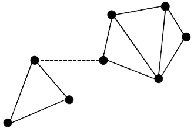
This graph becomes disconnected when the dashed edge is removed.
Exercise 2.12 (1.47). Prove that every connected graph on n vertices contains at leastn − 1 edges.
Exercise 2.13 (1.48). Does there exist a non-connected graph on 6 vertices containing 11 edges?
Exercise 2.14 (1.50). Prove that every non-connected graph on n vertices contains at most $\frac{1}{2}(n - 1)(n - 2)$ edges.
Definition 2.5.
A graph G′ = (V′,E′) is called a subgraph of G = (V,E) if V′ ⊆ V and E′ ⊆ E.
A component
of G = (V,E)
is a maximal connected subgraph G′ = (V′,E′). That
means, it is a connected subgraph and there is no other connected
subgraph G″ = (V″,E″) with
V′ ⊆ V″ and E′ ⊆ E″.
Hence, a graph G is connected
if and only if it consists of exactly one component.
Exercise 2.15 (1.59). Prove that if G1 = (V1,E1) and G2 = (V2,E2) are two distinct components of G then V1 ∩ V2 = ∅.
Exercise 2.16 (1.63). Prove that a graph G = (V,E) with each vertex having degree at least $\frac{1}{2}(n - 1)$ is connected.
Definition 2.6.
A walk (v0,v1,…,vk) is called a closed walk or a circle if v0 = vk.
A cycle with all vertices distinct is called a circuit.
A circuit of length 3 is called a triangle
Exercise 2.17 (1.67). Let G be a graph for which every vertex has a degree of at least 2. Prove that G contains a circuit.
Definition 2.7.
G = (V,E) is called a forest if G does not contain any circuit.
A connected forest is called a tree.
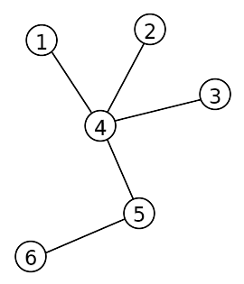
Exercise 2.18 (1.75). Prove that between any pair of vertices in a tree there is exactly one path.
Definition 2.8.
A vertex of degree 1 in a tree is called a leaf of the tree.
Exercise 2.19 (1.76). Prove that every tree with at least two vertices contains a leaf.
Exercise 2.20 (1.77). Derive from the previous exercise that every tree on n vertices has exactly n − 1 edges.
Exercise 2.21 (1.80). Prove that every tree with at least two vertices contains at least two leaves
Definition 2.9.
An Euler cycle in a graph G = (V,E) is a cycle C = (v0,v1,…,vk) (remember that v0 = vk), with the property that every edge e ∈ E is traversed exactly once; i.e., for each edge e ∈ E there exists exactly one i ∈ {1, …, k} such that e = {vi − 1, vi}.
A graph is called an Euler graph if it contains an Euler cycle.
An Euler path in a graph G = (V,E) is a path C = (v0,v1,…,vk) with the property that every edge e ∈ E is traversed exactly once, but it is not required that v0 = vk.
Theorem 2.1 (). Let G = (V,E) be a graph.
G is an Euler graph ⇔ G is connected and each of its vertices has even degree.
Exercise 2.22 (1.88). Let G be a connected graph with exactly two points of odd degree. Use Euler’s Theorem to prove that G contains a walk that traverses each edge exactly once.
Definition 2.10.
A circuit C of G is called a Hamilton circuit (or Hamilton cycle) if each vertex of G appears on C.
A graph G is called a Hamilton graph if it contains a Hamilton circuit. Hamiltonian cycles / graphs are also called Rudrata cycles / graphs.
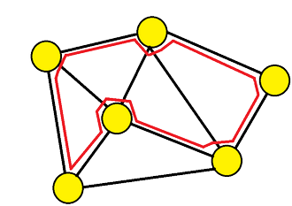
Exercise 2.23 (1.90). Let n be an odd number. Show that on an n × n chess board, it is not possible for a knight (horse) to move over the board, hitting each square exactly once, while starting and ending in the same square.
Exercise 2.24 (1.91). Show that for each n there exists a graph on n vertices such that each vertex has degree at least $\frac{1}{2}(n-1)$ and such that it is not a Hamilton graph.
Definition 2.11.
A matching M is a subset of the edges (M ⊆ E) such that no the edges in M have an end point (=nodes) in common.
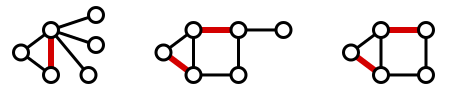
Edges cannot touch each other.
The size of the matching M is the number of edges in it: |M|.
A maximum macthing in a graph is a matching of maximum size.
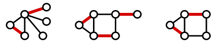
A perfect matching is a matching for which
each vertex is the end point of some edge in the matching, i.e., 2|M| = |V|.
⇝Clearly, a graph with an odd number of
vertices can not have a perfect matching.
Exercise 2.25 (X.1). Give an example of a connected graph with an even number of vertices that does not have a perfect matching.
Definition 2.12 ().
A directed
graph G is defined by a pair (V,A) where V is a finite set of points and
A is an ordered set of pairs
(=arcs) of two (distinct) points.
An arc (u,v) is
considered to be directed from u to v; v is called the head and u is
called the tail of the arc. We use the following notation for directed
graphs:
δ−(v): the
set of arcs with head v (the arcs towards v)
δ+(v): the
set of arcs with tail v (the arcs leaving v)
d−(v): the
number of arcs with head v (so d−(v) = |δ−(v)|)
d+(v): the
number of arcs with tail v (so d+(v) = |δ+(v)|)
-4ex -1ex -.4ex 1ex .2ex Tutorial 2: Network flow algorithms -3ex -0.1ex -.4ex 0.5ex .2ex Flows
Definition 2.13.
The networks we consider consists of a directed graph G = (V,A), two
special nodes s, t ∈ V which
are, respectively, a source and sink of G, and capacities ca > 0 on
each arc a ∈ A.
(Notation: we also write cuv for
a = (u,v).)
A flow f consists of a
number fa ≥ 0 for each
a ∈ A such
that:
the capacity constraints are met: 0 ≤ fa ≤ ca for each a ∈ A,
flow conservation is met, that means, the amount of flow leaving a point u (other than the source or sink) is equal to the amount of flow entering u: $$\sum_{(u,v)\in A} f_{uv} = \sum_{(v,u)\in A} f_{vu}\phantom{a} \mbox{for all}\phantom{a} u\in A\setminus \{ s,t \}$$
The value of the flow is the nett flow that leaves s: ∑(s,v) ∈ Afsv − ∑(v,s) ∈ Afvs To simplify notation, we define from now on fuv = 0 if (u,v) ∉ A. Then we can write the value of the flow a ∑(s,v) ∈ Afsv − ∑(v,s) ∈ Afvs
-3ex -0.1ex -.4ex 0.5ex .2ex Cuts
Definition 2.14. For a set U ⊂ V define:
δ−(U): the
set of arcs with head in U and tail in V \ U (arcs towards U
)
δ+(U): the
set of arcs with tail in U and head in V \ U (arcs leaving U
)
If U ⊂ V with s ∈ U and t ∈ V U then δ+(U) is called
an s-t cut. We call this the cut defined by U .
The next theorem says that the value of the flowis equal to the nett
flow across any s-t cut.
Theorem 2.2. Let f be a flow and δ+(U) an s-t cut then value(f) = ∑a ∈ δ+(U)fa − ∑a ∈ δ−(U)fa Equivalently, when we define fuv = 0 if (u,v) ∉ A, then we can write this theorem as value(f) = ∑u ∈ U(∑v ∈ V \ Ufuv−fvu)
Definition 2.15. The capacity of a cut δ+(U) is the total capacity of the arcs in the cut: $$\mbox{cap}(\delta^+(U))= \sum_{a \in \delta^+(U)} c_a = \sum_{\begin{tabular}{l} $(u,v) \in A:$ \\ $u\in U $\\$ v\in V\setminus U$ \end{tabular}} c_{uv}$$ To simplify notation we write cap(δ+(U)) as cap(U) and define cuv = 0 if (u,v) ∉ A. Then we can write the capacity of the cut defined by U as cap(U) = ∑u ∈ U(∑v ∈ V \ Ucuv)
Theorem 2.3. For any s-t flow f and s-t cut δ+(U): value(f) ≤ cap(U)
The theorm implies that the maximum value of a flow is no more than the minimum capacity of a cut. In fact, equality holds and the proof follows from the algorithm to find a maximum flow
-3ex -0.1ex -.4ex 0.5ex .2ex MaxFlow: The Ford-Fulkerson (FF) algorithm
Definition 2.16. The algorithm starts with zero
flow: fe = 0 for all
e ∈ A. Then, it
repeatedly chooses an appropriate path from s to t and increases the
flow along the arcs of this path as much as possible.
It is important to note that it may be necessary to reduce flow
along an arc in order to increase the flow over the path. In the example
below, the first number is the flow and the second number is the
capacity. The maximum flow is 2. However, the initial flow f1 of value 1
as shown in the figure cannot be extended without reducing the flow on
the arc in the middle.
Given a flow f, the residual graph (or residual network) gives for any arc the amount by which the current flow on the arc can be altered. For any arc (u,v) ∈ A, there is an arc (u, v) in the residual graph if there is still capacity left: fuv < cuv. But also, there is a reversed arc (v, u) in the residual graph if fuv > 0. The residual graph for our example is as follows. The numbers show the amount by which the current flow can be extended, or, if the arc is reversed, the amount by which the current flow can be reduced. The graph has an st-path, namely s, 1, 4, 3, 2, t. The minimum capacity on the path is 1. So we add 1 over this path. The new flow has value 2 which is the maximum. A more complex example of the FF algorithm is given in the slides.
Theorem 2.4. If all capacities are integer then the FF algorithm terminates and the flow fa is integer for each arc a ∈ A.
Theorem 2.5. The maximum value of an s-t flow is equal to the minimum capacity of s-t cut and FF-algorithm returns both a maximum flow and a minimum cut.
-3ex -0.1ex -.4ex 0.5ex .2ex MaxFlow: Edmonds-Karp-Dinitz (EKD) algorithm The algorithm applies the FF algorithm but in each iteartion it chooses the s-t path in the residual graph with the minimum number of arcs.
Theorem 2.6. The number of iterations of the EKD algorithm is O(nm)
-3ex -0.1ex -.4ex 0.5ex .2ex Mincost flow
Definition 2.17. In the minimum cost flow
problem we are given a network G = (V,A) with
s, t ∈ V and
a capacity ca for any arcs
a and, in addition, a cost that we denote by costa. The cost of a flow f is: ∑a ∈ Acosta ⋅ fa
By this definition, the minimum cost (zero) is attained by sending no
flow. In the minimum cost flow problem we want to find, for a given flow
value v, a flow of minimum cost among the flows of value v.
A mincost flow can be computed as follows:
First, find any flow f of value v, which can be computed by, for
example, the FF algorithm.
Next, make the residual network as in FF but now for each reversed arc
also make the cost negative. (Note that sending a flow over a reversed
arc in the residual corresponds with reducing the flow.) Let C be a
cycle in the residual graph. If we augment f by sending flow over C then
the value of the flow remains v. However the cost may change: If the sum
of the cost of the arcs in C is negative then the cost of the flow will
decrease.
Mincost flow algorithm: (The cycle cancelling
algorithm):
Step 1: Find a feasible flow of value v. Make the residual graph.
Step 2: While there is a negative-cost cycle C in the residual graph:
add the largest possible flow over C,
update the residual graph.
Theorem 2.7. The mincost flow algorithm returns a minimum cost flow.
-3ex -0.1ex -.4ex 0.5ex .2ex Flow exercises
Exercise 2.26 (1). Consider the following problem: There are p families going out for dinner and together they use q tables. No two members of a family should sit at the same table. Family i has ai people (i = 1, 2, …, p) and table j has bj chairs (j = 1, …, q). Formulate this problem as a maximum flow problem. (Make a sketch of the network including the capacities on the arcs.)
Exercise 2.27 (2). Explain how you can find a maximum matching in a bipartite graph by using a maxflow algorithm. That means, formulate the matching problem as a flow problem and explain how you can deduce the maximum matching from the maximum flow.
Exercise 2.28 (3). In the network below, each first number is the arc’s capacity and the second number is its cost per unit flow. Find a minimum cost flow of value 3 by following the steps of the cycle cancelling algorithm. Start with a flow of value 3 over the path s, a, t.
Exercise 2.29 (4). Consider a flow network with integer
capacities. Prove or disprove the following statements.
(a) If all capacities are even, then there is maximum flow in which
fa is even
for all a ∈ A. (b) If
all capacities are odd, then there is maximum flow in which fa is odd for
all a ∈ A.
Exercise 2.30 (A). Draw a small graph for which Dijkstra’s algorithm does not give the shortest path from node A to node B.
Exercise 2.31 (B). Fill in the blanks.
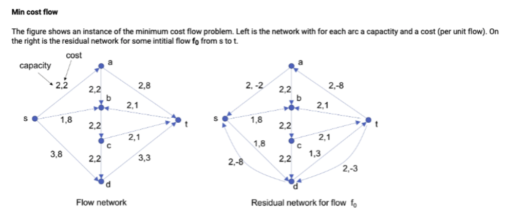
The value of the initial flow f0 is:
The cost of the initial flow is:
The ressiual network has a negative cost cycle.This is cycle:
Assume we add the maximum possible amount of flow overthis cycle to the
initial flow f0.
Then he cost of the flow decreases by
Theorem 3.1 (1). The sum of all the degrees of all the vertices of an graph is equal to twice its number of edges: ∑v ∈ Vd(v) = 2 ⋅ |E|
Proof. We can count the number of edge ends in two different ways:
it is the double of the number of edges since each edge having two ends
it is also the sum of the degrees of each vertex
. ◻
This theorem leads to the handshake lemma:
The number of odd-degree vertices is even.
Solution 3.1 (1.7). One graph which is a cycle on all the 5 points denoted by C5:
Solution 3.2 (1.8). Each node of 3-regular graph has degree 3 so odd. If there is 5 vertices then the number of odd-degre vertices is odd which is absurd according to the handshake lemma. Therefore, none.
Solution 3.3 (1.11). Using the Theorem 1, we have: $$\sum_{k=1}^{16} d(v_k) = 2m \Longleftrightarrow \sum_{k=1}^{16} 5 = 2m \Longleftrightarrow 5+\dots + 5 = 2m \Longleftrightarrow 5 \cdot 16 = 2m \Longleftrightarrow m = \frac{5\cdot 16}{2}$$
Solution 3.4 (1.12). Using the Theorem 1, we have: $$\sum_{i=1}^{n} d(v_i) = 2m \Longleftrightarrow \sum_{i=1}^{n} k = 2m \Longleftrightarrow k+\dots + 5 = 2m \Longleftrightarrow k \cdot n = 2m \Longleftrightarrow m = \frac{k\cdot n}{2}$$
Solution 3.5 (1.16). To prove the handshaking lemma,
we’ll use the Theorem 1: $$\sum_{i=1}^{n}
d(v_i) = 2m \Longleftrightarrow \sum_{\footnotesize\mbox{d(v) even}}
d(v) + \sum_{\footnotesize\mbox{d(v) odd}} d(v) = 2m$$ even +
even = even $\Longrightarrow
\left(\sum\limits_{\footnotesize\mbox{d(v) even}} d(v)\right)$ is
an even number.
even + odd = odd but 2m is always even. Therefore $\left(\sum\limits_{\footnotesize\mbox{d(v) even}}
d(v)\right)$ has to be even.
Solution 3.6 (1.19). Using the Theorem 1, we have: $$\sum_{i=1}^{n} d(v_i) = 2m \Longleftrightarrow d(v_1) + \cdots + d(v_n) = 2m \Longleftrightarrow \frac{d(v_1) + \cdots + d(v_n)}{n} = \frac{2m}{n}$$ We proved that on average a vertex is of degree $\frac{2m}{n}$.Hence, there must be a vertex less than $\frac{2m}{n}$ and a vertex of degree above $\frac{2m}{n}$.
Solution 3.7 (1.21). Assume all vertices has a different
degree.
There is n degrees different
therefore ∀v ∈ V,
d(v) ∈ {0, …, n − 1}.
However, there cannot be two vertices u, v with d(u) = 0
and d(v) = n − 1.
So, there are at most n − 1
different degrees.
Since we have more vertices than different degrees, by the Dirichlet’s
principle there must be at least two vertices that have the same
degree.
Solution 3.8 (1.26). Only regular if m = n.
Solution 3.9 (1.41). There are 2 paths: (1,3) and (1,2,3)
Solution 3.10 (1.42). Given a starting node and a final
node in Kn, how many
paths there is of size ? Let’s work on examples to find a logic:
path of size 1: 1
path of size 2: 2
path of size 1: 1
path of size 2: 2
path of size 3: 2
path of size 1: 1
path of size 2: 5-2 = 3
path of size 3: (5-2)(5-3)=6
path of size 4: (5-2)(5-3)(5-4) = 6
Hence, in general:
path of size 1: 1
⋮
path of size i: (n−2)⋯(n−i)
⋮
path of size n-1: (n−2)⋯1
To find the total number of paths, you would have to add all these numbers: $$1+ \sum_{l=2}^{n-1} \left( \prod_{k=2}^{l} (n-k)\right)$$
Solution 3.11 (1.43). Construct a path as follow:
Step 1: Take any vertex and call it v0. We build the path
(v0)
Step 2: Define i to be the index of the last vertex of our path.
Step 3: We add vi + 1 to the
path where vi + 1 is in the
neighborhood of vi and vi + 1 ∉ {v0, …, vi}
Step 4: Repeat 2 & 3 while i ≤ k
The existence of vi + 1 is
guaranteed since vi has at least
k neighbors and i < k.When i = k, we have the path
(v0,…,vk)
Solution 3.12 (1.47). By induction on n, we will prove
P(n) : "A connected graph on n vertices
contains at least n − 1 edges Base
case: for n = 1, we have 0 edges. Hence P(1) is true.
Induction hypothesis: Assume P(n) is true: every
connected graph with n vertices has at least n-1 edges.
Induction step: Let G = (V,E) be a
connected graph with n+1 vertices: v1, …, vn + 1.
Define G′ = (V\{vl},E\{vl,vi})
with 1 ≤ i ≤ n + 1
and vl any
vertice of G such that $d(v_k) = \min
\{d(v)\phantom{a} | \phantom{a} v \in E \}$. G has n vertices and G is
connected.
By our induction hypothesis, it follows that G’ has n-1 edges. Moreover
G is a connected graph therefore there is at least 1 edge between vl and another
vertice.Therefore G has at least n − 1 + 1 = n edges: P(n+1)
is true.
Hence by mathematical induction P(n) is correct for all positive
integers n.
Solution 3.13 (1.48). No since a non-connected graph on 6 vertices contains at most 10 edges.
Solution 3.14 (1.50). Let G = (V,E) be a
non-connected graph on n vertices.
Define G1 = (V1,E1)
and G2 = (V2,E2)
with: $$\left(V_1,V_2 \subset V \right)
\wedge \left(\forall \{u,v\} \in V,\phantom{a} u \in
V_1\phantom{a}\mbox{and}\phantom{a} v \in V_2 \Rightarrow \{u,v\} =
\emptyset\right)$$ In other words, there is no edge linking a
vertice of V1 to a
vertice of V2.
Let |V1| = k.
Therefore |V2| = |V \ V1| = n − k.
Solution 3.15 (1.59). Let G1 = (V1,E1)
and G2 = (V2,E2)
are two distinct components of G.
G1 is a maximal
connected subgraph so there is no other connected subgraph G′ = (V′,E′) with
V1 ⊆ V′
and E1 ⊆ E′.
In particular G2 is
a (maximal) connected subgraph thus V1 ⊈ V2
and E1 ⊈ E2.
G2 is a maximal
connected subgraph so there is no other connected subgraph G′ = (V′,E′) with
V2 ⊆ V′
and E2 ⊆ E′.
In particular G1 is
a (maximal) connected subgraph thus V2 ⊈ V1
and E2 ⊈ E1.
$$\left( V_1 \not\subseteq V_2 \wedge V_2 \not\subseteq V_1\right) \Longleftrightarrow V_1 \cap V_2 = \emptyset \phantom{a} \wedge \phantom{a} \left( E_1 \not\subseteq E_2 \wedge E_2 \not\subseteq E_1\right) \Longleftrightarrow E_1 \cap E_2 = \emptyset$$
Solution 3.16 (1.63). Let G = (E,V) be a
graph with ∀v ∈ V,
$d(v) \geq \frac{n-1}{2}$.
Assume it’s not connected. G can be partitioned into 2,3,.., n
components.
Let C be a component of G therefore it’s a (maximal) connected
subgraph.
If we split into 2 components, $\lvert C
\rvert = \frac{n}{2}$.
If we split into 3 components, $\lvert C
\rvert = \frac{n}{3}$. (and so on until n)
The best case scenario is into 2 components therefore C has at most
$\frac{n}{2}$ vertices.
However, all vertices of C can have at most $\frac{n}{2}-1$ edges. But $\frac{n}{2}-1 < \frac{n}{2}-\frac{1}{2} =
\frac{n-1}{2}$.
Since all vertices of G had to be greater or equal $\frac{n-1}{2}$, it’s absurd to have at most
our vertices in C of degree $\frac{n}{2}-1$. Therefore G is
connected.
Solution 3.17 (1.67). Let G = (V,E) be a
graph where ∀v ∈ V,
d(v) ≥ 2.
Step 1: Start anywhere by coloring a vertex.
Step 2: Take any usued edges and color the vertex.
Step 3: Repeat step 2 until return to a vertex.
We’ll be able to continue in the worst case until we have covered all
the vertices once. Since each vertex has degree at least 2, so there
will be an unused edge to exit on. If you ever return to a vertex where
you’ve been, you’ve got a cycle.
Solution 3.18 (1.75). Assume that between any pair of
vertices in a tree there is 2 path: p1 = (vk,...,vl)
and p2 = (vk,...,vl)
Therefore, by merging p1 and the reversed path
p2 without its
first vertice, we got a circle. That’s absurd. Therefore in any pair of
vertices in a tree there is exaclty one path.
Solution 3.19 (1.76). Let G be a tree without leaf.
Therefore all vertices are of degree 2. By the exercise 1.67, G must
contains a circuit.Absurd since G is a (connected) forest.
Thus G always has a leaf.
Solution 3.20 (1.77). By induction, we will prove:
P(n):" Every tree on n vertices has exactly n − 1 edges".
Base case: for n = 1, we have 0 edges. Hence
P(1) is true.
Induction hypothesis: Assume P(n) is true: every tree
on n vertices has exactly n-1 edges.
Induction step: Let G = (V,E) be a
tree with n+1 vertices.By the exercise 1.76 there must be a leaf
somewhere in G, remove it. By our induction hypothesis, the new graph
has n-1 edges, if we put back our leaf it’s clear that G has n-1+1 = n
edges. Therefore P(n+1) is true.
Hence by mathematical induction P(n) is correct for all positive
integers n.
Solution 3.21 (1.80). By the Theorem 1, ∑v ∈ Vd(v) = 2 ⋅ |E| = 2(n−1)
Therefore the average degree of a vertice in a tree is $\frac{2n-2}{n}$.
Assume there is only one leaf in a tree.Then all other vertices should
be of at least degree 2. (not 0 since a tree is a connected
forest)
Therefore the minimum average of a tree is: $$\min\left(
\frac{1+d(v_2)+\dots+d(v_2)}{n}\right)=\frac{1+2(n-1)}{n} = \frac{2n
+1}{n}$$ However $$\frac{2n-2}{n}
<\frac{2n +1}{n}$$ Our average is too big given our assumption
therefore there must be more than 1 leaf.
Solution 3.22 (1.88). Let G be a connected graph with
exactly two vertices of odd degree.
Add one linking edge between those two vertices of odd degree.Now all
vertices have an even degree.
Therefore, by the Euler Theorem there is an Euler cycle.
By deleting the linking edge, the Euler cycle became an Euler
path.
Solution 3.23 (1.90). Let n be an odd number. We want to
show that on an n × n
chess board,it is not possible for a knight (horse) to move over the
board, hitting each square exactly once, while starting and ending in
the same square.
A knight moves from white to black and vice versa. Since n is odd, n2 is odd. If it starts
on black, then it is on white after n 2 moves. But then it cannot be
back at its starting point.
Solution 3.24 (1.91). We want to prove the existence of a
graph G with n vertices with $\forall v \in V,
d(v) \ge \frac{n}{2}-1$ such that there is no Hamilton
Circuit.
If n is even then take two components with n/2 vertices of degree $\frac{n}{2}-1$.
If n is odd then take two complete graphs on n/2 vertices and merge two vertices
to have only one.All vertices will be of degree $\frac{n}{2}-1$ except the merged vertex that
will have n − 2
Solution 3.25 (X.1).
Solution 3.26 (1). Take vertices (v1,v2,…,vp)
where vi
corresponds with family i.
For each table j, take a vertex wj . Further add
points s and t.
There is an arc (s,vi)
with capacity ai for each
i ∈ {1, …, p}.
There is an arc (wj,t)
with capacity bj for each
j ∈ {1, …, q}.
For each pair (i, j), there is an arc (vi, wj)
with capacity 1.
An upper bound on the maximum flow vale is $\sum\limits_{i} a_i$ since that is the
maximum flow that can leave s. If there exists a flow of value $\sum\limits_{i} a_i$ then this immediately
give a solution to the dinner problem since, by Theorem 3, the flow on
each arc (vi,wj)
is either 0 or 1. If the flow value on (vi,wj)
is one then a person from family i is seated at table j.
Solution 3.27 (2).
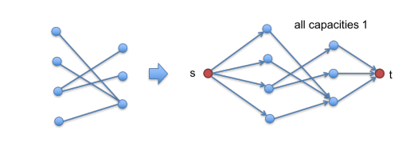
Solution 3.28 (3).
Cost: 3 ⋅ 4 + 3 ⋅ 4 = 24
Residual graph
Look for a negative circle: − 4 + 2 + 3 − 4 = − 3 and the residual
capacity is 2.
Cost: 24 − 2 ⋅ 3 = 18
Residual graph
Look for a negative circle: − 4 − 4 + 2 + 1 + 3 = − 2 and the residual
capacity is 1.
Cost: 18 − 2 = 16
Residual graph
No negative circle hence 16 is the minimal cost flow.
Solution 3.29 (4). (a) True. Divide all capacities by 2.
Theorem 3 says that there is an optimalflow with integer flow values fa
on each arc. Now multiply all fa by two.
(b) Not true. This is a counter example where All edges have odd
capacity, but the maxflow is even.
Solution 3.30 (A).
Solution 3.31 (B).
The value of the initial flow f0 is:2 + 2
The cost of the initial flow is:16 + 6 = 22
The ressiual network has a negative cost cycle.This is cycle:abct
Assume we add the maximumpossible amount of flow overthis cycle to the
initial flow f0.
Then he cost of the flow decreases by 6.